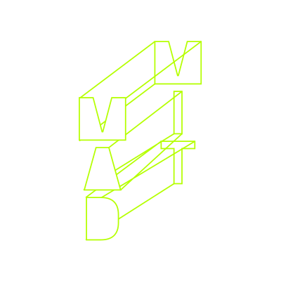
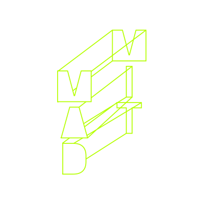
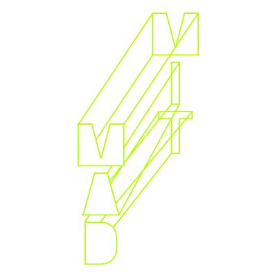
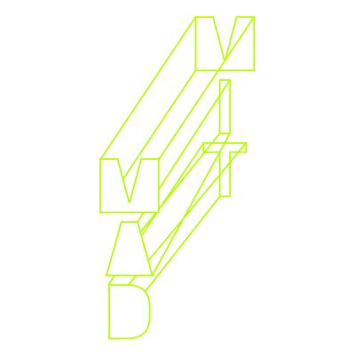

The MIT Morningside Academy for Design (MIT MAD) is pleased to announce its inaugural conference, THE POWER OF DESIGN. The event celebrates the beginning of MIT MAD’s activities by exploring how interdisciplinary design collaboration helps us to address our biggest societal challenges.
MIT MAD is a major interdisciplinary center that will build on the Institute’s leadership in design-focused education and become a global hub for design research, thinking, and entrepreneurship. It will encourage design work at MIT to grow and cross disciplines among engineering, science, management, computing, architecture, urban planning, and the arts.
THE POWER OF DESIGN conference is structured in three sessions:
The sessions highlight how the three pillars of MAD’s activities—Research, Education, and Entrepreneurship—can strongly impact the world.
The conference will convene global design leaders who will encapsulate their vision of design’s power. The contributors represent different fields of knowledge and different types of design practices. Their diverse backgrounds reveal how design is crucial for a rich variety of disciplines and contexts—from humanities to STEM, from industrial production, to community building. The presentations will be followed by a conversation moderated by a MIT faculty member.
The event will be housed at the new MIT Museum Exchange Room. The sessions will be public and will stream live online. THE POWER OF DESIGN will close with a reception to present the inaugural cohort of MAD Fellows.
If you are interested in attending THE POWER OF DESIGN, either in person or online, please register here.
SESSION 1
DESIGN GROUNDS INNOVATION
Design practices are key drivers of research and innovation in different fields—from biotechnologies, to health, to computation. The first session looks at the history, present, and future of design in order to emphasize how design guides advanced research, produces new knowledge, and fosters new modes of coexistence.
SESSION 2
DESIGN TRANSFORMS EDUCATION
Positioning design at the core of education will transform how we teach and learn at all levels, from kindergarten to graduate studies. Our second session brings to light the emerging forms of design pedagogy which are appearing at academic institutions across the world. The talks reveal that knowing design procedures gives students powerful tools to understand, reframe, and address in novel ways our most demanding global challenges.
SESSION 3
DESIGN EMPOWERS SOCIETY
The last session focuses on how to make design innovations available for everyone, and how design addresses different, and pressing, societal needs. The contributors explore the forms of business and social entrepreneurship that allow designers to scale up new products and consolidate new types of design practices.


 


 
